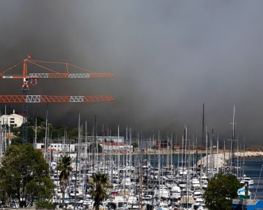
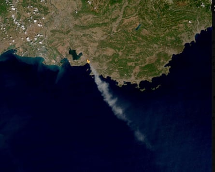
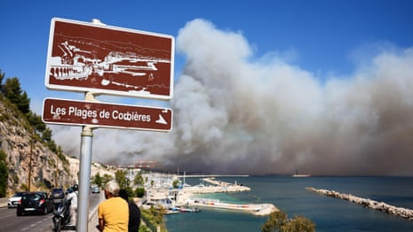
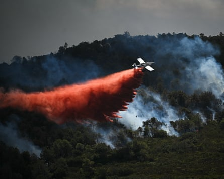
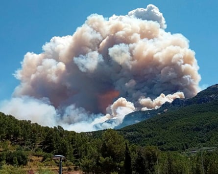

More than 15,000 residents of Marseille confined to their homes have been allowed out after a wildfire on the outskirts of France’s second city was brought under control, but officials have warned the country faces an exceptionally high-risk summer.
Fanned by gale-force winds and kindled by parched vegetation, several fires have burned swathes of southern France in recent days, including Tuesday’s just north of the port city . The weather service has said the weeks ahead could be critical.
“The fire is receding, but with a blaze this severe, over this big an area, it’s clear there may be fresh flare-ups, flames can jump, embers can reignite,” the prefect of the Bouches-du-Rhône department, Georges-François Leclerc, said on Wednesday.
The Plage des Corbieres area of Marseille engulfed in smoke from the wildfire on Tuesday.Photograph: Clement Mahoudeau/AFP/Getty Images
The mayor of Marseille, Benoît Payan, said firefighters had the blaze “clearly under control” and residents of the northern 16th arrondissement were “no longer under lockdown”, but he urged people to “exercise the utmost caution throughout the area”.
More than 700 firefighters and 220 emergency vehicles aided by helicopters and planes continued to battle the blaze, which has burned through 750 hectares of land and damaged more than 70 houses, including some inside the city.
No serious injuries were reported, but about 40 people, including firefighters and police, were treated for smoke inhalation and minor injuries. Sixteen needed hospital treatment. More than 400 people were evacuated, including 70 residents of a retirement home in the suburb of Les Pennes-Mirabeau, where a car fire sparked the blaze.
A satellite image provided by Meteo France shows smoke from the wildfire billowing out to sea.Photograph: AP
Flights to and from Marseille airport, France’s fourth-largest, which was closed from midday on Tuesday, have resumed, but authorities said they may be suspended again at short notice if the facilities were needed for firefighting aircraft.
Train and bus services, many of which were cancelled, were also returning to normal and several motorways and main roads were reopened after being closed to reduce the risk to the public and allow free passage for emergency vehicles.
Marseille’s fire service chief, Lionel Mathieu, said the forecast was for the wind to pick up again later on Wednesday, “but more moderately than yesterday”. A strong Mistral wind gusting up to 60mph (100km/h) helped the fire spread rapidly on Tuesday.
The fire filled central Marseille with acrid smoke and flying cinders. Videos from the Old Port area showed large plumes of smoke billowing over the city and satellite images showed smoke clouds stretching about 100km out to sea.
Footage shows wildfire raging on the outskirts of Marseille – video
Three southern departments have been placed on red fire alert, with many of the region’s forests closed and barbecues and cigarettes banned near wooded areas.
“There’s every reason to believe we’re heading for a high-risk summer,” France’s interior minister, Bruno Retailleau, said. The Mediterranean is one of the regions most vulnerable to extreme heat driven by the climate crisis.
Two smaller wildfires in the Gard and Hérault departments had burned through 1,000 hectares by midday on Wednesday, local authorities said.
A major three-day blaze on the outskirts of Narbonne had destroyed nearly 2,000 hectares of forest, scrub and farmland and was “still active”, the prefect of the Aude department said, with embers sporadically reigniting.
The national weather service has said the country’s entire southern region is at “high” or “very high” risk for at least the next few days, with temperatures forecast to rise further. It described the situation around the Mediterranean as critical.
A firefighting aircraft dropping retardant over a wildfire near Narbonne on Tuesday.Photograph: Matthieu Rondel/AFP/Getty Images
Grégory Allione, an MP and honorary president of the French firefighters association, told Le Monde that the country had learned lessons from the disastrous summer of 2022 , when wildfires destroyed 70,000 hectares.
An advanced observation system using fixed cameras, drones and AI analysis ensures almost all fire starts – 5,900 have been reported this year – are tackled within 15 minutes of detection, and most are contained before they spread beyond a hectare.
Many of France’s ageing fleet of about 40 firefighting aircraft are 30 or even 40 years old, however, and replacements are not scheduled to arrive until 2028 or 2029.
A government spokesperson told French radio that spending on firefighting equipment, including new planes, would be ringfenced from budget cuts of €40bn (£34.5bn) to be announced by the country’s prime minister, François Bayrou.
Experts have also warned, however, that the fleet is undersized, and the historic drought that has gripped much of southern Europe for several years means plentiful water supplies for firefighters are increasingly unreliable.
Several other Mediterranean countries have been battling similar wildfires. A blaze in the Spanish province of Tarragona has burned through more than 3,100 hectares of forest, farm and urban land, and confined 18,000 people.
A wildfire rages in Pauls, Tarragona, on Tuesday.Photograph: AP
In Syria, wildfires have raged in the northern Latakia province for a sixth day, burning more than 18,000 hectares. More than 1,100 people have been displaced as authorities warn that strong winds threaten to spread the fires to neighbouring provinces.
Though wildfires are a near-annual occurrence on the forested Syrian coast, the blazes were particularly intense as the country’s worst drought in decades has turned Mediterranean pines into bone-dry kindling.
Syria has received about 50% of its usual rainfall this year. Efforts to contain the fires are also hampered by a lack of resources, an air force crippled by Israeli strikes and mountainous terrain filled with unexploded ordnance from the 14-year civil war.
Additional reporting by William Christou in Beirut